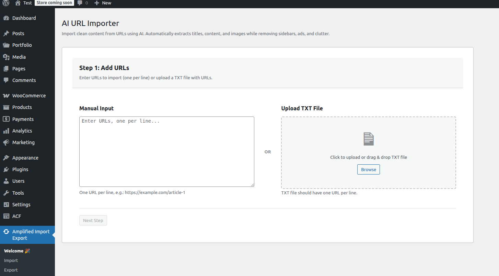
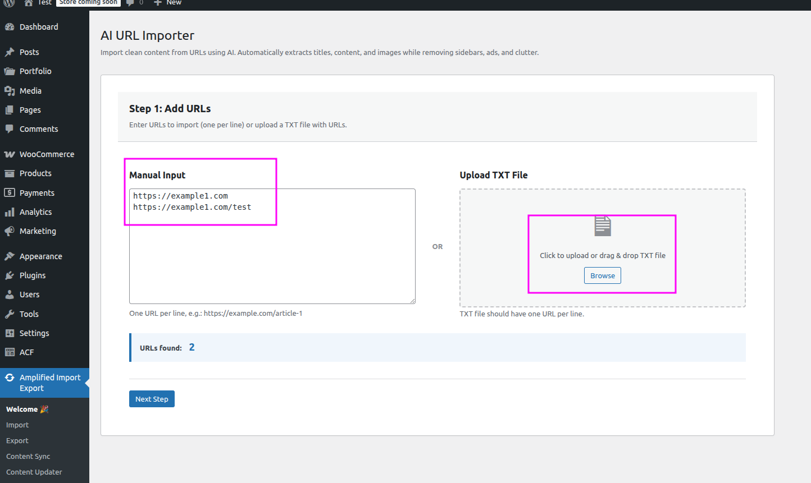
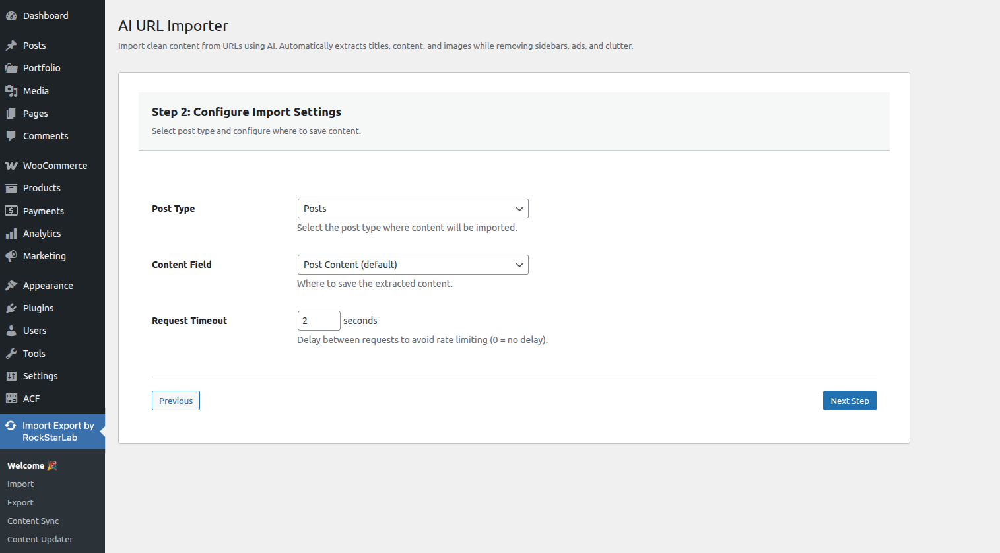
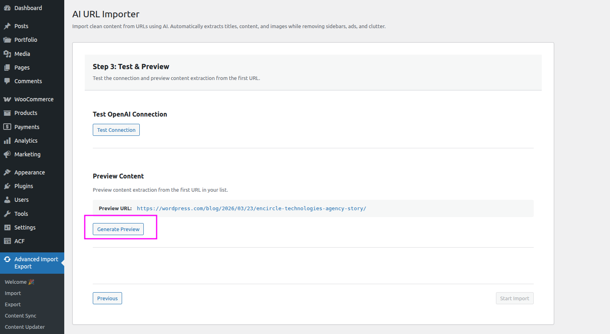

🤖 AI URL Importer
Provide a URL or list of URLs and let the AI parse the remote page to automatically create a WordPress post of any type — no copy-pasting required.
How It Works
The plugin fetches the HTML content of the URL you provide, extracts the meaningful text and metadata, and then sends it to the OpenAI API. GPT analyses the page and maps the content to the WordPress fields you specify — creating a ready-to-publish post in seconds.
Import Workflow
Step 1 — Open AI URL Importer
Navigate to Advanced Import Export → AI URL Importer.

Step 2 — Enter the URL
Paste the full URL of the page you want to import into the URL field. The page must be publicly accessible (no login required).
To import multiple pages at once, upload a .txt file where each line contains one URL. The plugin will process each URL sequentially and create a separate WordPress post for every entry in the file.
.txt and upload directly on this screen.

Step 3 — Configure Import Options

| Option | Description |
|---|---|
| Post Type | The WordPress post type to create (Post, Page, or any registered CPT). |
| Content Field | Where to save the extracted content. Choose Post Content to populate the standard WordPress editor, or select an ACF field to store the content in a custom field. |
| Request Timeout | Delay in seconds between consecutive requests when importing multiple URLs. Increase this value to avoid hitting rate limits on the target site or the OpenAI API. Set to 0 for no delay. |
Step 4 — Preview & Import
Click Next Step. The plugin fetches the page and sends it to the OpenAI API. When complete, a preview of the extracted fields is displayed. Review the title, content, and other fields, then click Start Import to save the post to WordPress.

Setting Up Your OpenAI API Key
-
1Create an OpenAI account Go to platform.openai.com and sign up or log in.
-
2Generate an API key In the OpenAI dashboard, navigate to API Keys and click Create new secret key. Copy the key — it starts with
sk-. -
3Add it to the plugin Go to Advanced Import Export → Options, paste your key into the OpenAI API Key field, and click Save Settings.